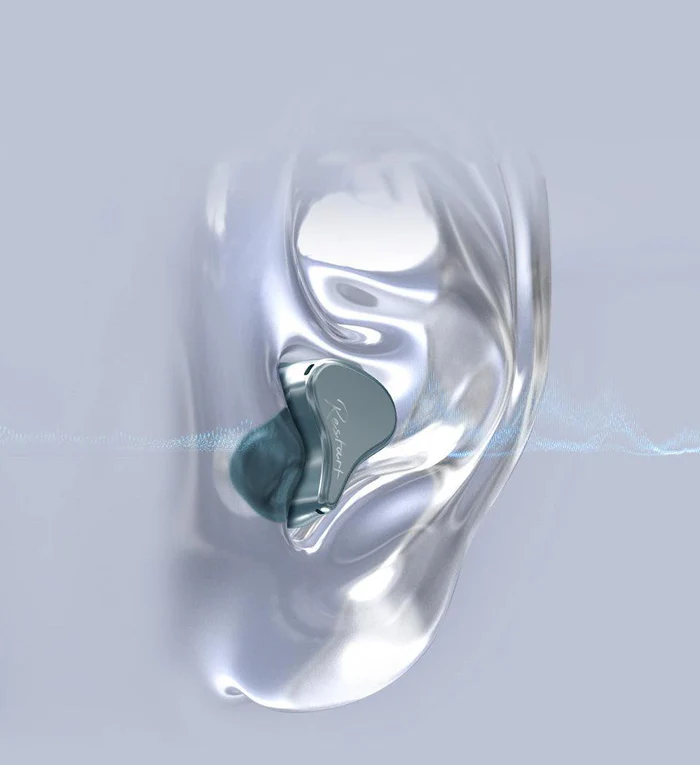
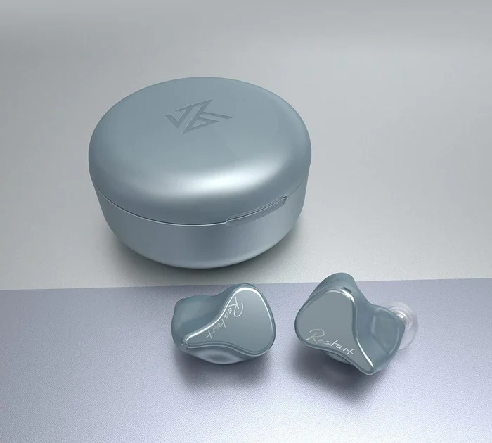
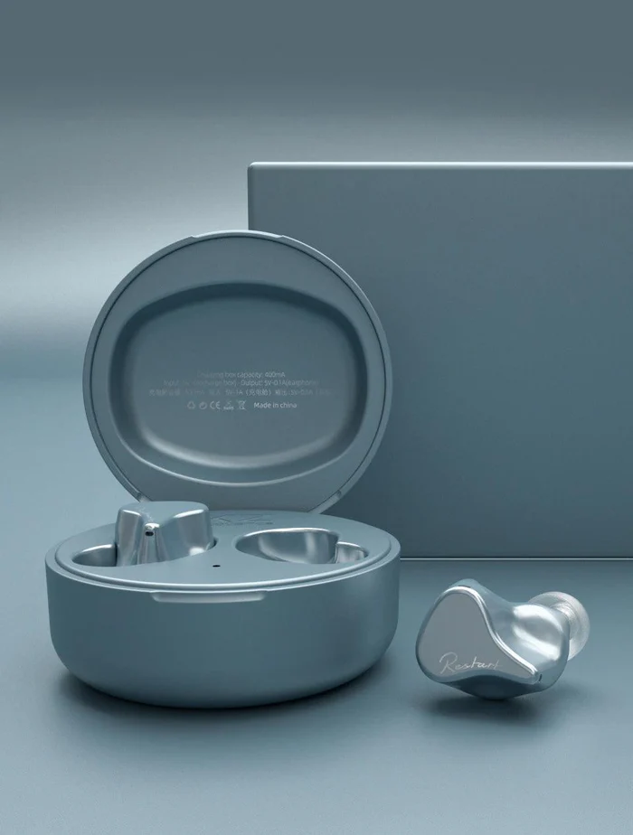

KZ SKS foi adicionado ao carrinho!
Compra realizada!
Compra cancelada.
Sobre nós:
Somos a
Kz Store
A loja com certificado de distribuição oficial e referência global em produtos KZ
Na KZ Store, nossa missão é levar até você a melhor experiência em áudio. Trabalhamos exclusivamente com produtos originais da KZ, uma das marcas mais reconhecidas do mundo quando o assunto é qualidade sonora e inovação. Selecionamos cuidadosamente cada modelo para atender desde ouvintes casuais até músicos, gamers e entusiastas de áudio que buscam desempenho excepcional. Além de oferecer produtos de alta qualidade, prezamos por um atendimento transparente, entrega segura e total compromisso com a satisfação dos nossos clientes.
Acreditamos que um bom atendimento é tão importante quanto um bom produto. Por isso, nossa equipe está sempre pronta pra ajudar você a encontrar exatamente o que precisa, com agilidade e sem complicação.
Conheça melhor nosso produto:
.webp)



Algumas das principais características do KZ SKS:
Áudio de Alta Definição
• Som com Resolução HD:
A combinação do driver dinâmico de 10mm e do armador balanceado oferece um palco sonoro amplo e detalhes ricos nas altas frequências.• Áudio AAC de Alta Qualidade:
Divisão eletrônica de frequência precisa para um som equilibrado e quente, ideal para todos os estilos musicais.Conforto e Estilo
• Design Leve e Moderno:
Pesando apenas 5,2g por fone, eles são compactos e confortáveis, mesmo durante longos períodos de uso.• Ajuste Ergonômico:
Projetados para se encaixarem perfeitamente no canal auditivo, garantindo estabilidade, conforto e isolamento eficaz contra ruídos externos.Tecnologia Bluetooth Avançada
• Chip Qualcomm QCC3040:
Suporte para áudio aptX, transmissão de canal duplo e otimização do sistema para maior estabilidade de conexão e baixa latência.• Conexão Simplificada:
Após o primeiro pareamento, os fones se conectam automaticamente, tornando o uso diário mais prático.Bateria de Longa Duração
• 8 Cargas Completas:
O estojo de carregamento com capacidade de 400mAh garante até 8 ciclos de carga, permitindo que você fique conectado o dia inteiro.• Alta Duração
O KZ SKS oferece entre 3 e 5 horas de uso contínuo com uma única carga, variando conforme o volume e o tipo de utilização. Mesmo em chamadas e reproduções em volumes elevados, o fone mantém um bom desempenhoGaranta agora o seu KZ SKS e descubra uma nova forma de ouvir música. Com som de alta qualidade, conexão estável e bateria de longa duração, ele é a escolha ideal para quem busca desempenho e praticidade no dia a dia.